【释义】如果邪气盛了，精气就会衰败。

初秋｜节气｜ 处暑 ｜时间｜ 八月廿三日至九月七日
今年处暑需特别注意的健康问题：发热、长痘、皮炎、痛风、风疹
原料：豆腐、豇豆角、空心菜、胡椒粉、油、盐。
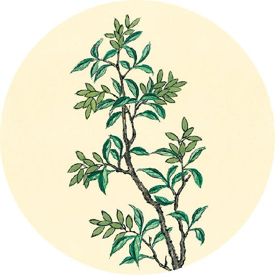
节气食方
出伏送暑汤
原料：豆腐、豇豆角、空心菜、胡椒粉、油、盐。
做法：
1. 将豆腐切小方块，豇豆角切约6厘米的段，空心菜取嫩茎叶。
2. 在锅内放清水，水开后放少许盐和植物油，再放入豆腐和豇豆角煮熟。
3. 豇豆角熟透后，加入空心菜，此时不要盖锅盖。
4. 待锅内汤再次沸腾后，洒胡椒粉起锅。
功效：清热利湿、补益肾气；调理下焦湿热、小便异常、白带。
【释义】如果邪气盛了，精气就会衰败。
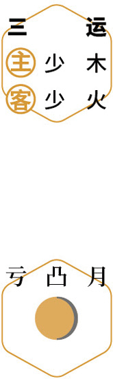
 天灸
天灸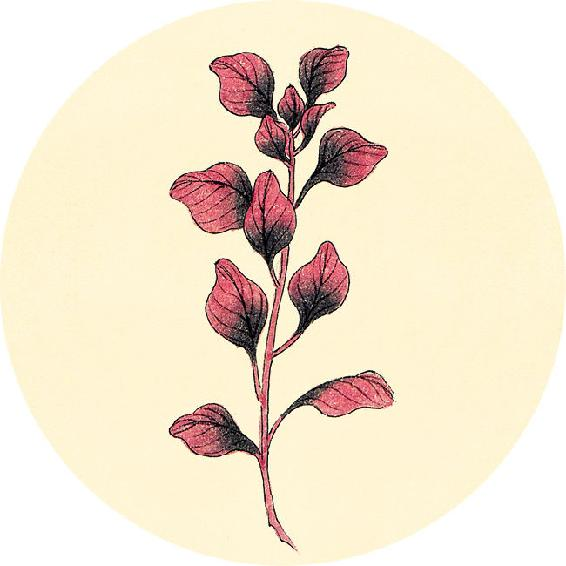
二十四节气茶养生
今年处暑节气品茶推荐：蒲公英根茶。
清痘排毒茶
原料：马齿苋10克、蒲公英10克。
做法：沸水冲泡，代茶饮。
功效：清湿热；适合鼻部、面颊长青春痘同时经常便秘的人饮用。
关于马齿苋的功效，见8月30日。
关于蒲公英的功效，见8月31日。
凡治病，察其形气色泽，脉之盛衰，病之新故，乃治之，无后其时。
——黄帝内经·素问·玉机真藏论
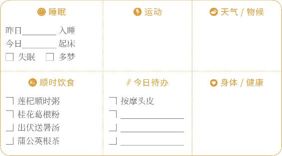
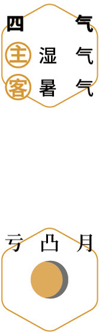
刮痧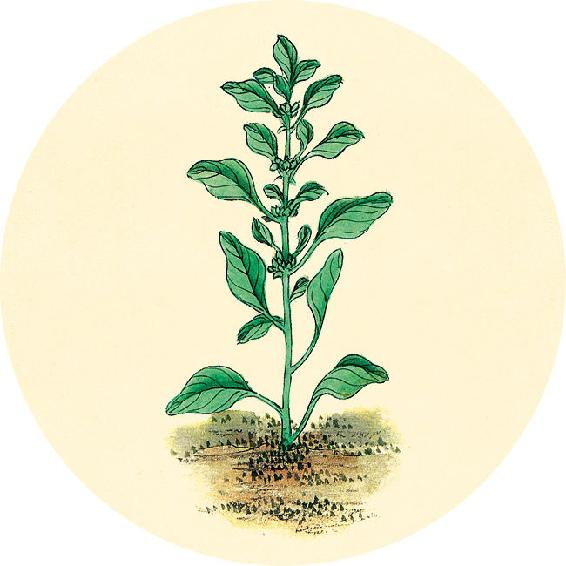
健康提示
处暑节气的养生功课：补脾肾气，祛下焦湿气。
今年处暑特殊的养生重点——
今年处暑节气，人体不仅在下焦易有湿气，全身都可能因湿热而出现各种小症状。
养生重点：祛湿热。
容易出现的问题：发热、长痘、皮炎、痛风、风疹。
【释义】大凡治病，要先诊察病人的形体、脏气、面色，以及脉的虚实，病的时间长短，然后治疗，不要错过应季治疗的时机。
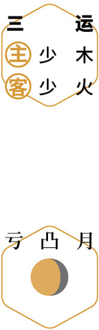
听蝉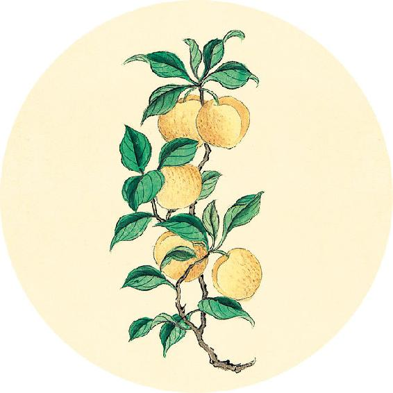
健康提示
今天贴伏后第二次加强贴（需要的人），今年三伏贴的功课就此结束。贴得好不好，冬天就可以见到效果。
一候反思（三伏总结）
做了________次三伏贴 做了________次刮痧
贴后的感觉：
□ 发冷 □ 发热 □ 发痒 □ 出疹 □ 困倦
吃了多少次三伏食方（打钩):
□ 黄芪20次以上 □ 贴伏茶4次以上
形气相得，谓之可治。
——黄帝内经·素问·玉机真藏论
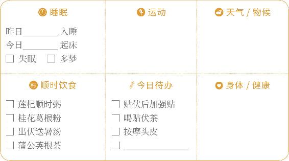
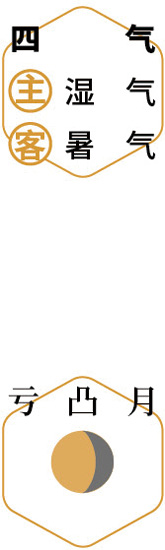
天灸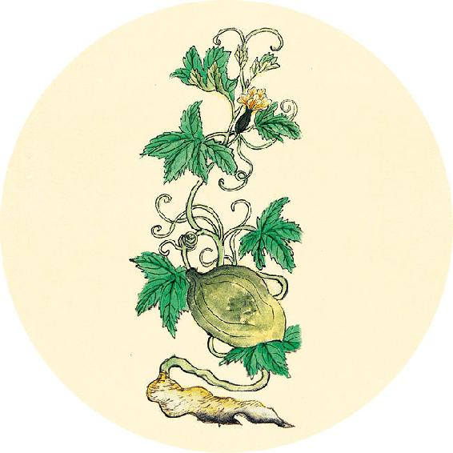
健康提示
从今天开始进入辛丑岁的第四运。
历时73天（8月27日12:31—11月8日13:44）
主运——太金；客运——太土。
第四运的主运是“金”，金在人体为肺，在方位为西，在气候为燥，在四季为秋。每年的这个阶段是秋天，西风带来凉爽的天气。
根据8月11日自测结果选择打钩：
□ 夏季体重及腰围均变小的人，从今日起，喝莲杞顺时粥可以不用放荷叶。
□ 其他人配方不变。
【释义】病人的形体盛衰与身体脏气强弱相符合，病可治。
 刮痧
刮痧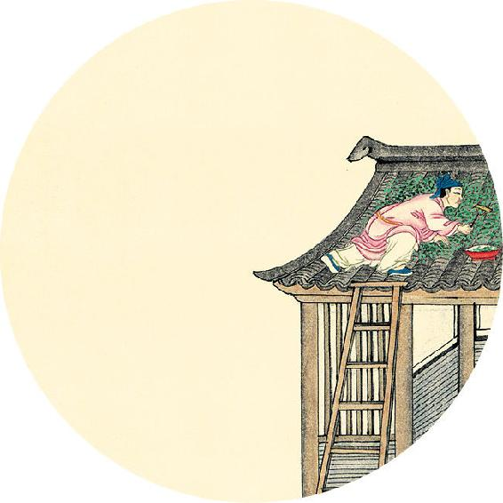
健康提示
处暑节气食方出伏送暑汤是一道纯素的汤，却有补的作用。幼儿和孕妇也可以喝，全家老小都适宜。
汤里的豇豆角和空心菜是主角，不要轻易替换成别的蔬菜。
豇豆角是少数可以补肾气的蔬菜之一。而空心菜有打通人体水液输送的通道，促使多余水湿从小便处排出的作用。
色泽以浮，谓之易已。
——黄帝内经·素问·玉机真藏论
补肾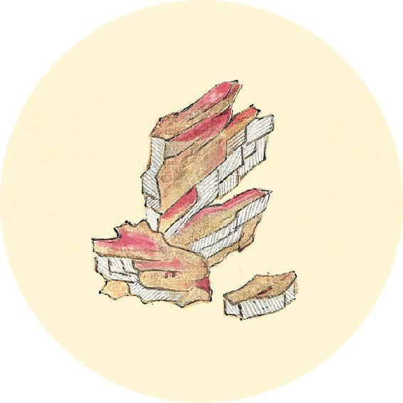
健康提示
处暑节气湿热仍在，当湿热盘踞人体内部，会引起各种炎症，例如膀胱系统的炎症、泌尿系统的炎症、妇科炎症、男科炎症。
年轻人脸上长青春痘，也是湿热炎症的一种表现，可以喝清痘排毒茶。
【释义】病人的气色明润，病容易治愈。
 祛湿
祛湿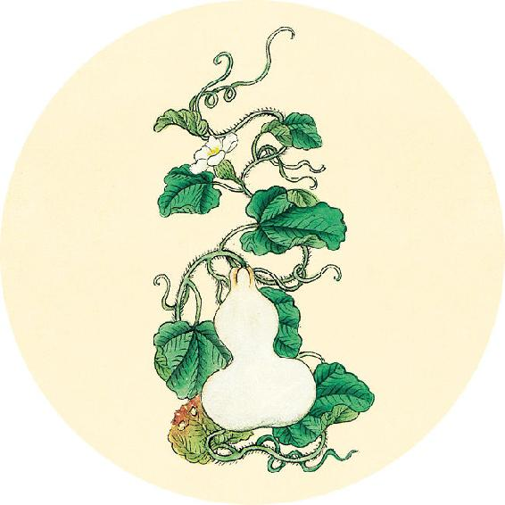
健康提示
皮肤急救的食材：马齿苋。
马齿苋既是野菜又是中药，在中国从最冷的东北到最热的海南都能生长。这是因为它强大的抗晒抗菌能力，使它能适应各种不利的环境。特别适合用于皮肤急救。
马齿苋清毒抗炎的作用内外兼修，既可以清除人体内部的血毒，又可以去除皮肤表面的毒。
当皮肤表面受损导致发红、发炎、过敏时，都可以用到马齿苋。
脉从四时，谓之可治。
——黄帝内经·素问·玉机真藏论
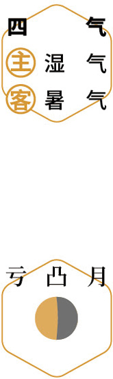
辟螨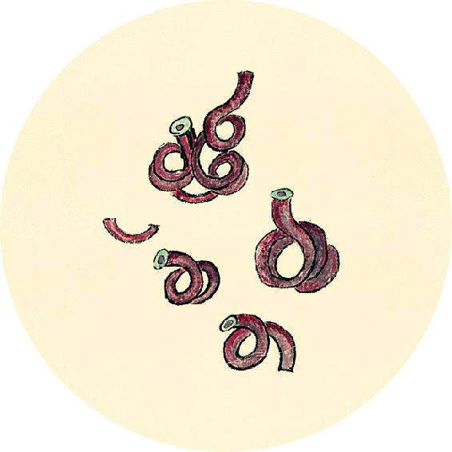
健康提示
消肿散结的食材：蒲公英。
古人说：“蒲公英，至贱而有大功，惜世人不知用之。”蒲公英的茎叶性寒，既清热又能消炎，能消急性的红肿（咽喉红肿、乳腺炎红肿、眼睛红肿、青春痘等）；蒲公英的根没有那么寒，既清毒又能强肾，能消慢性的肿毒（胆囊炎、胃溃疡、慢性肝炎等），经常吃，对于预防肿瘤有帮助。
【释义】病人的脉象与当季的气候相应，病可治。
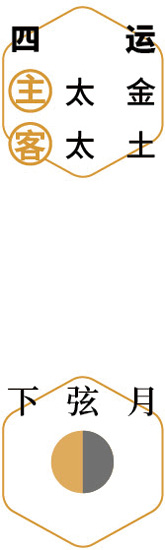
佩香囊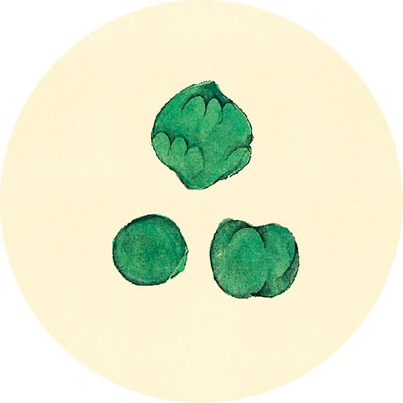
二候反思
上个月是否出现：
身体困重 □ 是 □ 否
皮肤红疹/痱子 □ 是 □ 否
发胖 □ 是 □ 否
女性白带多 □ 是 □ 否
长痘 □ 是 □ 否
任何一个答“是”，今年白露节气不吃红酒炖梨，喝荷叶瘦身茶（见8月16日）。
脉弱以滑，是有胃气，命曰易治，取之以时。
——黄帝内经·素问·玉机真藏论
读书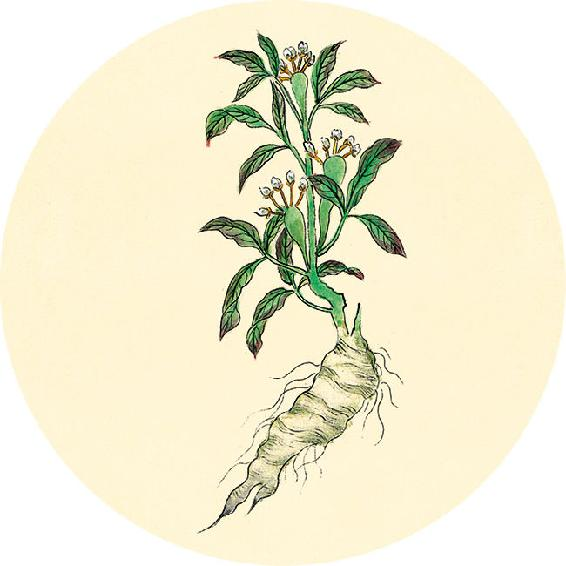
健康提示
自制调理颈椎变形的颈椎枕。
1. 用一个空的玻璃酒精瓶，拿毛巾包裹住，每天晚上睡20分钟，再换普通枕头睡觉。
2. 热敷颈椎枕。
原料：小茴香、大青盐、纯棉布（不能含化纤成分）。
做法：
1. 用厚实的纯棉布料缝制成U形枕袋。
2. 把中药小茴香和大青盐填充进去，填充的比例和饱满度可以自己调整，太饱满会过硬，不饱满支撑度又不够。盐不要太多，否则太重会压脖子。
【释义】病人脉来柔和而滑利，是有胃气的表现，病易治，注意因时制宜。
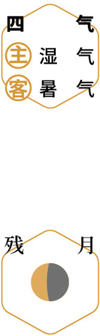
护颈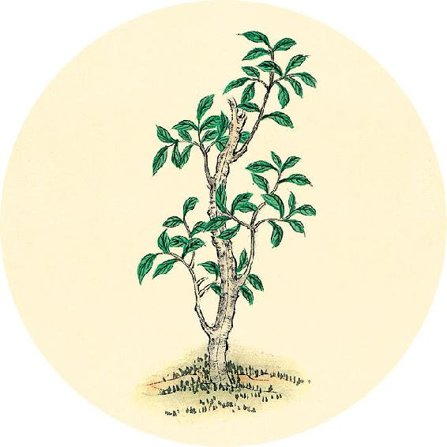
读书
“五味子，性酸温。主益气，咳逆上气，劳伤羸瘦，补不足，强阴，益男子精。”
——《神农本草经》
中老年保健茶方：二子延寿茶。
原料：枸杞子、五味子各6克。
做法：沸水冲泡；或将五味子煮水，起锅时加入枸杞。
功效：益肾、滋肝、养心、补五脏之气，改善视力和听力，延年益寿。
形气相失，谓之难治。
——黄帝内经·素问·玉机真藏论
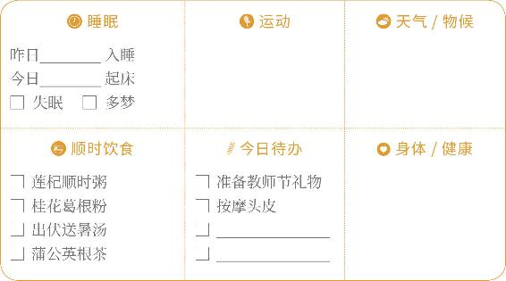
 进补
进补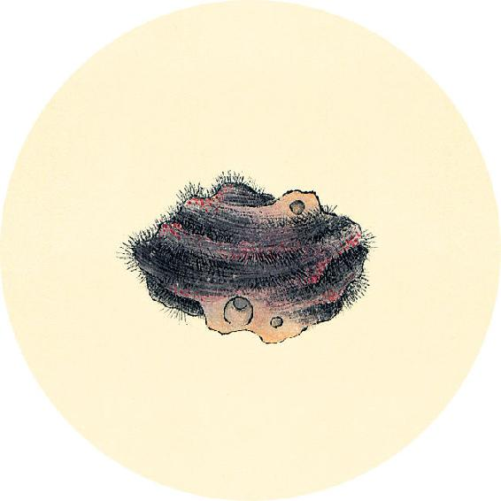
健康提示
即将进入仲秋。这个月人体的水液代谢最容易出现不均衡的现象。越是临近中秋，这种现象越明显。
这是因为中秋时月亮对人体的影响力最大，这个影响力主要作用在人体的“水”。
每年中秋时节，由于月亮和太阳共同的引力达到最大，会产生一年中最大的海潮。人体内水分含量达70%，也同样受到引潮力影响。因此中秋前后人体水液容易出现波动。
【释义】病人的形体盛衰与身体脏气强弱不相符合，病难治。
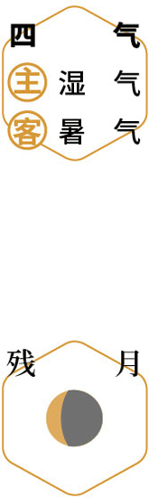
祛湿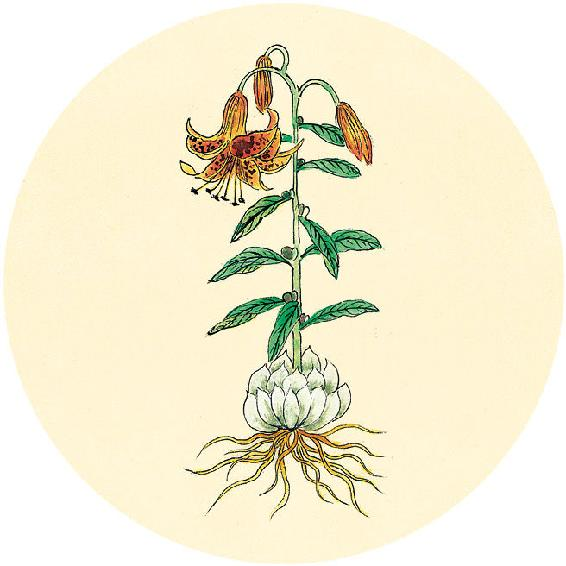
食材准备
后天进入白露节气。
1. 红酒炖梨
原料：梨、红酒、丁香粉。
2. 辛丑岁四气保健方：桂花葛根粉（从大暑喝到秋分前日，做法见7月29日）
原料：葛根粉、桂花（干品）、枸杞、蜂蜜（糖尿病人可以用罗汉果甜味料代替）各适量。
3.荷叶瘦身茶（见8月16日）
4.桂子暖香茶
原料：桂花、枸杞。
5.辛丑岁全年保健方：莲杞顺时粥
原料：炒荷叶、川陈皮、莲子、枸杞子、茯苓、粥料。
色夭不泽，谓之难已。
——黄帝内经·素问·玉机真藏论
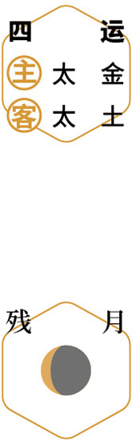
送暑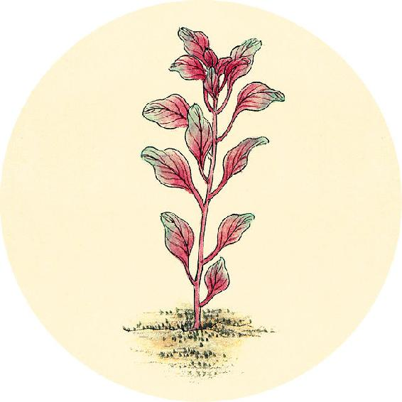
节气总结备
吃红酒炖梨的次数________
喝桂花葛根粉的次数________
喝蒲公英根茶的次数________
喝莲杞顺时粥的次数________
身体哪些方面有改善_________________________
【释义】病人的气色晦暗无光，病难治愈。

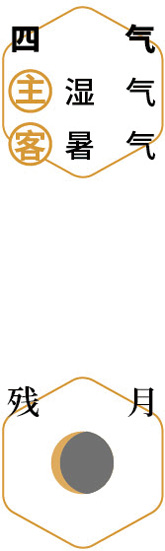
静养